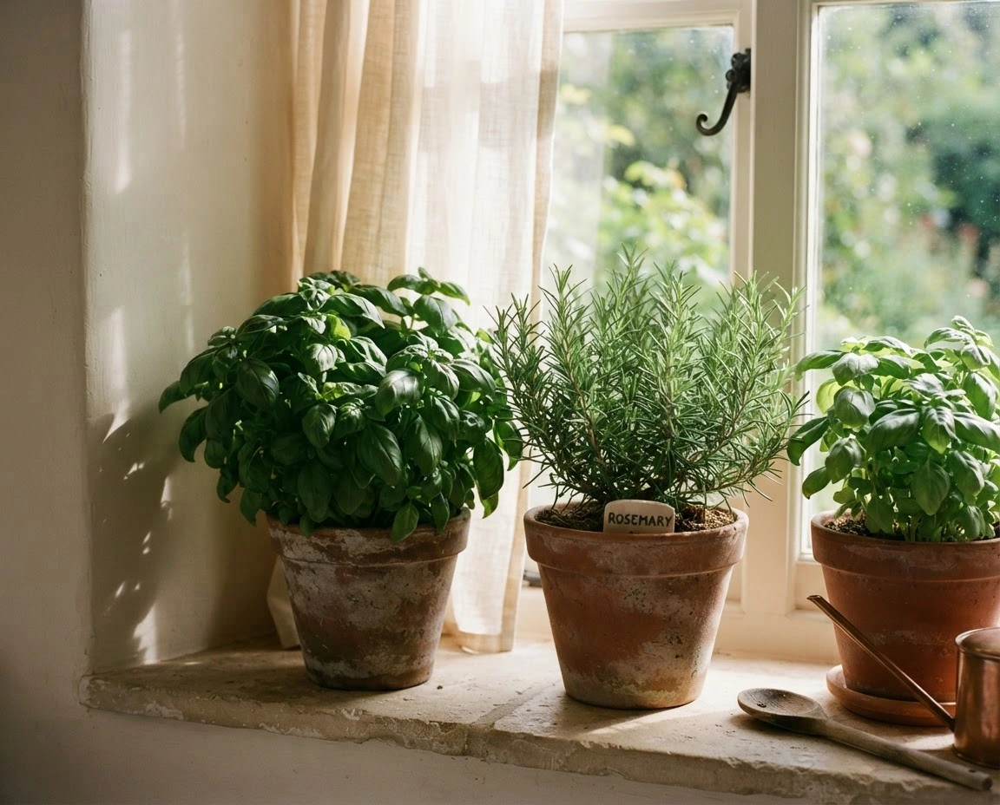
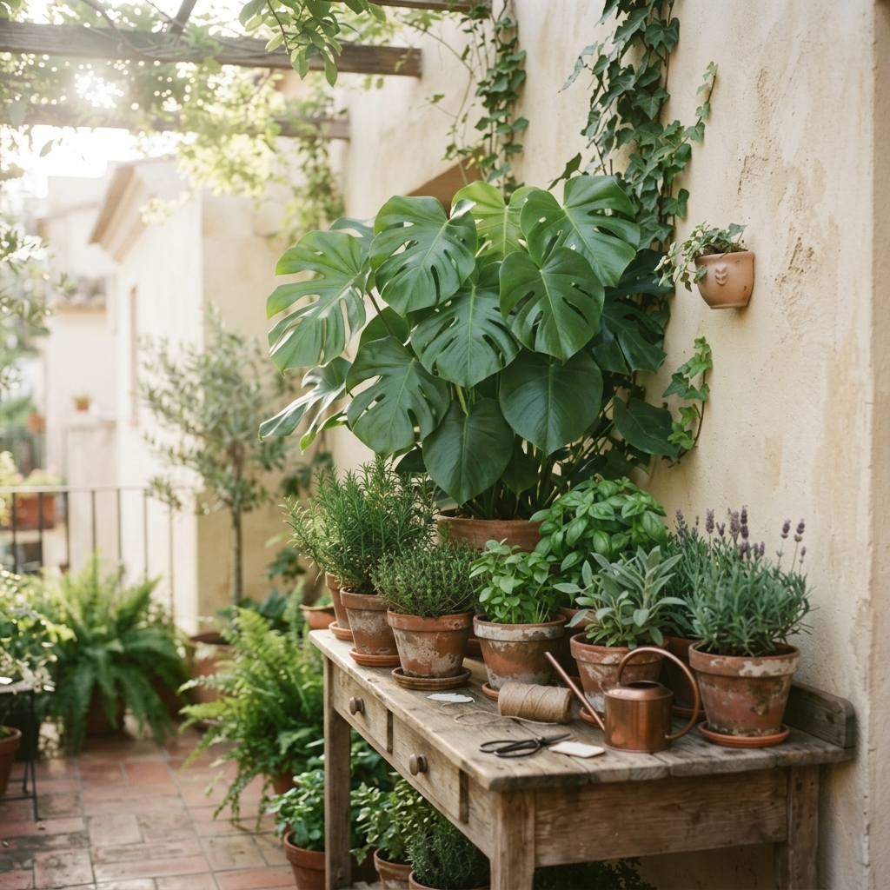
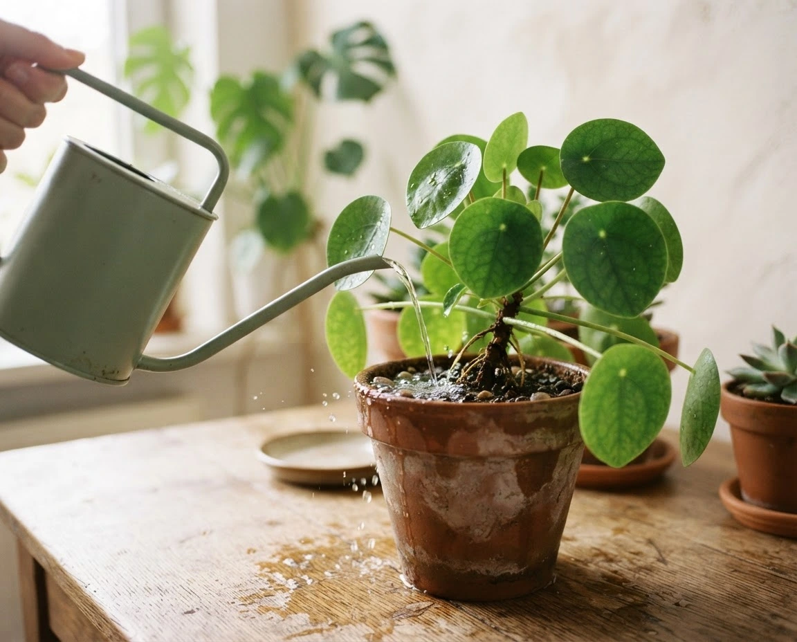
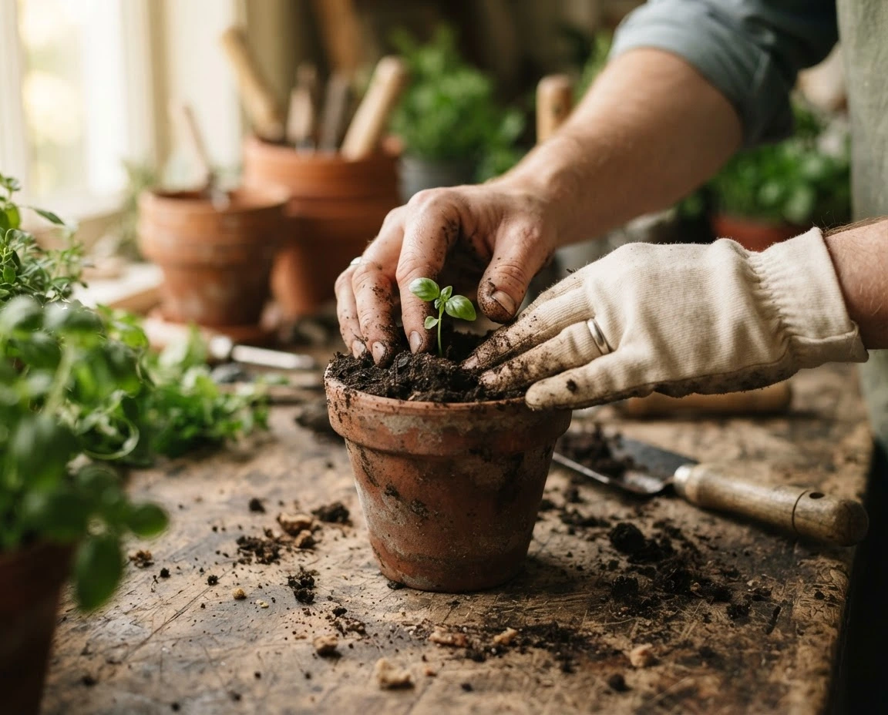
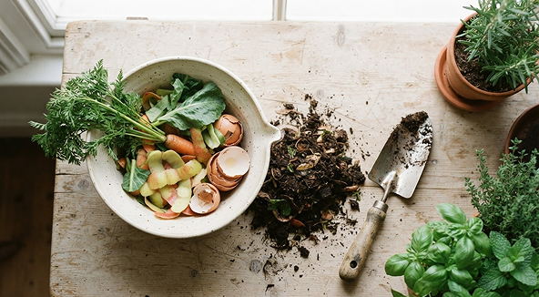
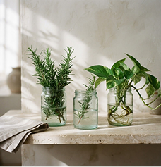
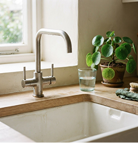

01 - luz natural
Elige el lugar adecuado
Busca espacios con iluminación apropiada.
observa cómo entra el sol durante el día
Pequeñas acciones grandes cambios
Descrubre cómo reciclar, cultivar y adoptar hábitos sostenibles desde casa. El cambio comienzacon pequeñas acciones.
Empieza el cambioMás consciente. Más simple. Más verde.

Separar correctamente nuestros residuos permite aprovechar materiales y reducir el impacto ambiental.
Papel, cartón, plástico, vidrio y metales limpios.
Restos de frutas, verduras y residuos vegetales.
Residuos contaminados y materiales que no pueden recuperarse.
Si tienes dudas, consulta las normas de separación de tu localidad. Cada residuo en su lugar cuenta.
02 / conecta con lo natural
Cultivar en casa te conecta con la naturaleza, llena de vida tus espacios y se enseña a cuidar. No necesitas un gran jardín: empieza con una maceta.

01 - luz natural
Busca espacios con iluminación apropiada.
observa cómo entra el sol durante el día

02 / agua en equilibrio
Adapta el eigo a las necesidades de cada planta.
toca la tierra antes de volver a regar.

03 / raices sanas
Utiliza sustratos adecuados y mantén tus plantas saludables.
Elige una maceta con buen drenaje.
Cada decisión cotidiana es una oportunidad para cuidar el planeta. Consume con intención, aprovecha lo que tienes y convierte pequeños gestos en buenos hábitos.

Transforma residuos orgánicos en un abono natural.
Alterna restos de frutas y verduras con hojas secas. Evita carnes y aceites.

Dale una segunda vida a los materiales antes de desecharlos.
Guarda tus frascos de vidrio: pueden ser recipientes o pequeñas macetas.

Reduce el consumo de agua y energía.
Cierra el grifo al cepillarte y aprovecha la luz natural antes de encender una lámpara.